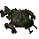
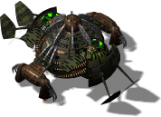

Mother



In-game info panel
- Power produced:
- 400
- Energy (HP):
- 5000
- Max number of people:
- 300
- Flight speed:
- 6667 km/s
- Flight costs:
- Extract 1500
- Iron 1500
- Carbon 1000
- Titanium 800
Description
The mother ship, from whose womb all life on a planet starts. Without her guiding hand, our efforts are handicapped. She is capable of storing and transporting small amounts of raw materials as well as housing a number of people, though more when she is at rest than in flight. She can generate a small amount of power and is capable of moving on and between planets. Losing the mother ship would ultimately lead to our destruction, as we would lose the ability to conquer new planets. The mother ship must be fully operational to take off.
Related
- Unlocks
- Main base, Civil building, Civil building, Civil building, Civil building, Civil building, Civil building, Civil building, Civil building, Reactor, Hive, Extractor, Relay, Initiation Bld., Menagerie, Light Factory, Hangars, Bunker, Design Office, Spaceport, Store, Medusa, Heavy Factory, Rocket Tower, Mega Extractor, Airfield, Launch Pad, Mega Factory, Ion Cannon, Insect, 2 Insects, 3 Insects, 4 Insects, 5 Insects, Insectus, Cerberus 100, TS Vandalus, RS Hydra, Centaur, Space Pod, Cerberus 102, Gryphon, Harpy, HS Cyclop, TM Vandalus, RM Hydra, TL Vandalus, Dragon, Hydra, HM Cyclop, RX Hydra, Minotaur, Shuttle, Ship, Starship, Heavy Factory, Heavy Factory Upgrade, Mega Extractor, Mega Factory, Mega Factory Upgrade, Insectus, Centaur, TM Vandalus, RM Hydra, TL Vandalus, Dragon, Hydra, HM Cyclop, RX Hydra, Minotaur, Anti-gravity Belts, Personal Power Field, Bio-Shield System, Plasma PowerSpeed, Ion PowerSpeed, Chameleon System, Magnetic Bag, Anti-gravity Bag, Phase Shield, Biodynamic Armour, Liktor Armour, Bio Servo, Flow Engine, Ion Power, Plasma Caterpillar, Ion Power 2, Gauss Cannon, Active Core, Tron Shell, Bionic Sight, Tyrant Shell, Actin Core, Magna Shell, Korred Rocket, Shadow Rocket
- Equivalent of the other side
- Mother ship
Config values not shown in game (9)
SIGHT- 12
BUILDER- 50
TRACE- 2
HEIGHT- 1
COMPONENT_QUANT- 1
SPRITE_QUANTITY- 1
TYPE- R_aMATKA
AIBLD- AIBLD_MOTHER
AREA- 1, 1, 1, 0, 0, 0, 0, 0, 0, 0, 1, 1, 1, 0, 0, 0, 0, 0, 0, 0, 1, 1, 1, 0, 0, 0, 0, 0, 0, 0, 1, 1, 1, 0, 0, 0, 0, 0, 0, 0, 1, 1, 1, 0, 0, 0, 0, 0, 0, 0, 0, 0, 0, 0, 0, 0, 0, 0, 0, 0, 0, 0, 0, 0, 0, 0, 0, 0, 0, 0, 0, 0, 0, 0, 0, 0, 0, 0, 0, 0, 0, 0, 0, 0, 0, 0, 0, 0, 0, 0, 0, 0, 0, 0, 0, 0, 0, 0, 0, 0